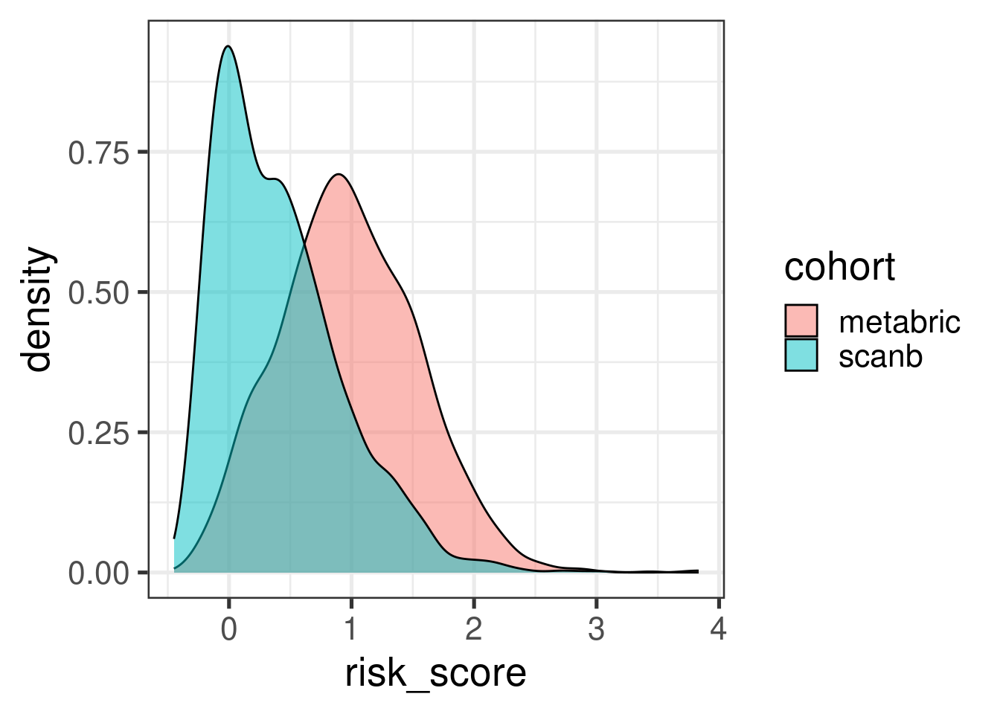
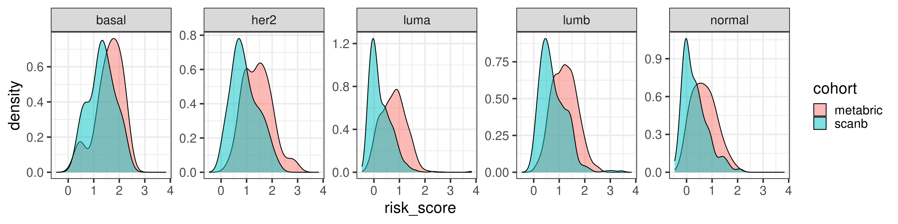
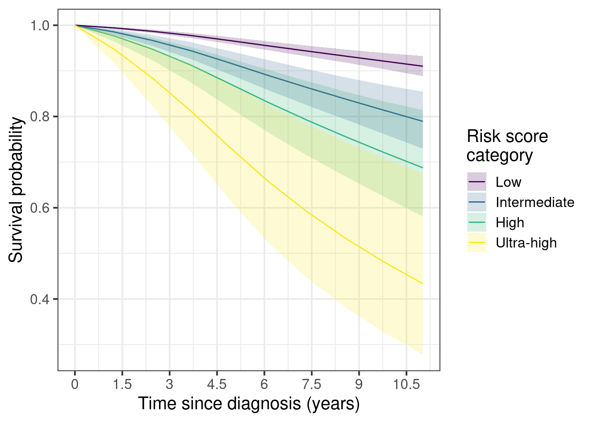
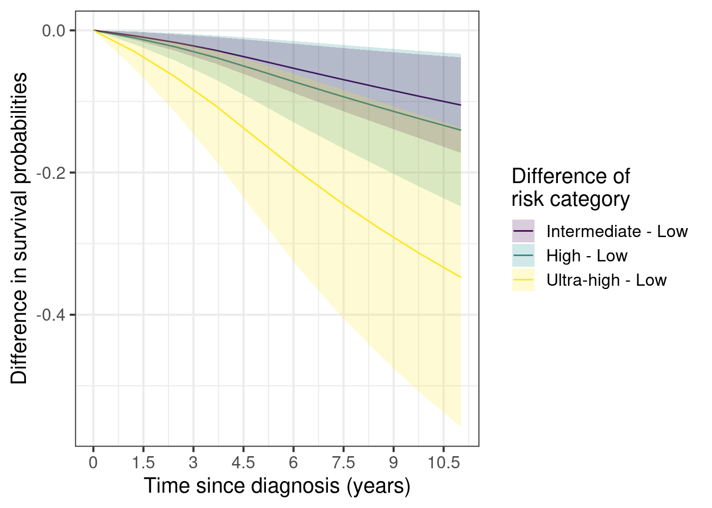

* The library is already synchronized with the lockfile.5 Risk score model
Several risk signatures were developed over the years using transcriptomic datasets. Some examples were given in the previous chapters, such as OncotypeDX, Prosigna and EndoPredict. They were all derived in a similar manner, subsetting genes related to usually estrogen and proliferation signaling and then using recurrence free survival data to calculate the risk scores.
In this chapter we introduce a new risk score that does not subset genes and uses the information of the molecular landscape. The concept is simple, we will use the third and fourth components as covariates in the survival modeling along with tumor size and node status. This way we avoid subsetting and selecting specific genes and we use all the information the molecular landscape is providing us. Also it avoids any kind of binning for patients based on molecular subtype, thus not being necessary calculating correlations with pre-defined molecular subtypes.
Later in the chapter we compare the risk score with the ROR binary categories: high and low/intermediate risk. We also compare the risk score with the ROR continuous value obtained by the SCANB team using nearest centroid classification (NCN). We use samples from patients that were treated with endocrine therapy only for the training of the risk score. Even though the ROR was trained on a cohort of patients that received no treatment, we can still compare the signatures. Buus et al. (2021) showed that the EndoPredict signature is highly correlated to ROR (\(\rho = 0.68\)), therefore we can to some extent take conclusions based on the ROR signature.
We develop a risk score for early stage breast cancer patients that received only endocrine therapy (ET). The idea is similar to what was done with the EndoPredict signatures, but here we extend it by using the molecular landscape information. This provides a full framework where we can analyse the risk of recurrence even for patients that have high ER+ percentage.
5.1 Generating the risk score
We focus only on the endocrine treated patients. For the training part of the algorithm we use a subset of patients from the METABRIC cohort. We then test the risk scores in the test set and we further validate the score on SCANB.
We will generate two risk scores: one including only the principal components and another one including the clinical features of the patients when valiable, namely tumor size, node status and age (either having one or more lymph node with breast cancer cells or none).
Call:
survival::coxph(formula = as.formula(paste0("Surv(time = rfs_months, event = rfs_status) ~ ",
paste(c(pcs_to_use, clin_vars), collapse = "+"))), data = training_set)
n= 556, number of events= 216
coef exp(coef) se(coef) z Pr(>|z|)
PC3 -0.091540 0.912525 0.027255 -3.359 0.000783 ***
PC4 0.080512 1.083842 0.022588 3.564 0.000365 ***
tumor_size 0.021809 1.022049 0.004292 5.082 3.74e-07 ***
node_statuspos 0.582681 1.790834 0.147602 3.948 7.89e-05 ***
age 0.003150 1.003155 0.007030 0.448 0.654061
---
Signif. codes: 0 '***' 0.001 '**' 0.01 '*' 0.05 '.' 0.1 ' ' 1
exp(coef) exp(-coef) lower .95 upper .95
PC3 0.9125 1.0959 0.8651 0.9626
PC4 1.0838 0.9226 1.0369 1.1329
tumor_size 1.0220 0.9784 1.0135 1.0307
node_statuspos 1.7908 0.5584 1.3410 2.3916
age 1.0032 0.9969 0.9894 1.0171
Concordance= 0.676 (se = 0.019 )
Likelihood ratio test= 66.18 on 5 df, p=6e-13
Wald test = 71.92 on 5 df, p=4e-14
Score (logrank) test = 72.75 on 5 df, p=3e-14We see that all coefficients have less variability than age. Now we calculate only the risk score based on the components.
Call:
survival::coxph(formula = as.formula(paste0("Surv(time = rfs_months, event = rfs_status) ~ ",
paste(c(pcs_to_use), collapse = "+"))), data = training_set)
n= 556, number of events= 216
coef exp(coef) se(coef) z Pr(>|z|)
PC3 -0.08657 0.91707 0.02699 -3.207 0.00134 **
PC4 0.09068 1.09492 0.02216 4.091 4.29e-05 ***
---
Signif. codes: 0 '***' 0.001 '**' 0.01 '*' 0.05 '.' 0.1 ' ' 1
exp(coef) exp(-coef) lower .95 upper .95
PC3 0.9171 1.0904 0.8698 0.9669
PC4 1.0949 0.9133 1.0484 1.1435
Concordance= 0.626 (se = 0.019 )
Likelihood ratio test= 22.5 on 2 df, p=1e-05
Wald test = 22.49 on 2 df, p=1e-05
Score (logrank) test = 22.78 on 2 df, p=1e-05We see that the coefficients are very similar to what was found before, it didn’t change much. Also when we include the principal components on the top of the clinical variables the log likelihood increases, which is a good indication:
Analysis of Deviance Table
Cox model: response is Surv(time = rfs_months, event = rfs_status)
Model 1: ~ tumor_size + node_status + age
Model 2: ~ PC3 + PC4 + tumor_size + node_status + age
loglik Chisq Df Pr(>|Chi|)
1 -1231.1
2 -1221.2 19.88 2 4.821e-05 ***
---
Signif. codes: 0 '***' 0.001 '**' 0.01 '*' 0.05 '.' 0.1 ' ' 1Now we use the test set to calculate the score.
Call:
survival::coxph(formula = Surv(time = rfs_months, event = rfs_status) ~
risk_score, data = test_set)
n= 371, number of events= 140
coef exp(coef) se(coef) z Pr(>|z|)
risk_score 0.8632 2.3707 0.1583 5.453 4.96e-08 ***
---
Signif. codes: 0 '***' 0.001 '**' 0.01 '*' 0.05 '.' 0.1 ' ' 1
exp(coef) exp(-coef) lower .95 upper .95
risk_score 2.371 0.4218 1.738 3.233
Concordance= 0.655 (se = 0.025 )
Likelihood ratio test= 28.56 on 1 df, p=9e-08
Wald test = 29.73 on 1 df, p=5e-08
Score (logrank) test = 29.78 on 1 df, p=5e-08We see that the higher the risk score the worse it is for the patients treated only with endocrine therapy.
5.2 Validating the risk score on SCANB
We can now validate the risk score on the SCANB dataset.
Call:
survival::coxph(formula = as.formula(paste0("Surv(time = rfs_months, event = rfs_status) ~ ",
paste(c("risk_score"), collapse = "+"))), data = endo_only_scanb)
n= 2442, number of events= 175
coef exp(coef) se(coef) z Pr(>|z|)
risk_score 1.1248 3.0795 0.1138 9.885 <2e-16 ***
---
Signif. codes: 0 '***' 0.001 '**' 0.01 '*' 0.05 '.' 0.1 ' ' 1
exp(coef) exp(-coef) lower .95 upper .95
risk_score 3.079 0.3247 2.464 3.849
Concordance= 0.696 (se = 0.022 )
Likelihood ratio test= 78.2 on 1 df, p=<2e-16
Wald test = 97.71 on 1 df, p=<2e-16
Score (logrank) test = 96.79 on 1 df, p=<2e-16Again the risk score is prognostic with a high coefficient, meaning that the higher the score the worse it is for the patient.
We now visualize a bit the risk scores developed here in terms of the molecular landscape. Figure 5.1

We now investigate the risk score among patients that have high ER IHC percentage as well. We have seen that these patients have different outcomes based on the molecular estrogen signaling. We now investigate the effect of the risk score.
Call:
survival::coxph(formula = as.formula(paste0("Surv(time = rfs_months, event = rfs_status) ~ ",
paste(c("risk_score"), collapse = "+"))), data = endo_only_scanb %>%
dplyr::filter(ER.pct >= 90 & risk_score < 2))
n= 1832, number of events= 126
coef exp(coef) se(coef) z Pr(>|z|)
risk_score 1.1989 3.3165 0.1652 7.257 3.96e-13 ***
---
Signif. codes: 0 '***' 0.001 '**' 0.01 '*' 0.05 '.' 0.1 ' ' 1
exp(coef) exp(-coef) lower .95 upper .95
risk_score 3.317 0.3015 2.399 4.585
Concordance= 0.685 (se = 0.026 )
Likelihood ratio test= 48.9 on 1 df, p=3e-12
Wald test = 52.66 on 1 df, p=4e-13
Score (logrank) test = 55.63 on 1 df, p=9e-14We see that the score is still prognostic, meaning that even patients that have high ER IHC percentage, there are those with higher risk. Note though that the analysis still is a bit limited due to the followup time that in median is 5.3 years.
We also compare the risk score for the high risk group and low/intermediate risk group of the ROR signature (Figure 5.2) obtained by the SCANB team using single sample predictor models, where rule based algorithms are used to determine if a patient is high or low/intermediate risk. They validate this on prosigna’s own sequencing and showed good results (Staaf et al. 2022).

As expected most of the patients in the high risk group are luminal B. The ROR signature was developed in such a way to get luminal B patients to be of high risk. But here we see that there is still an overlap between low/intermediate patients and high risk patients, suggesting that the new risk score has additional information. For assessing this hypothesis we perform recurrence free survival analysis with both variables and just the risk score and compare the likelihood of the two models using anova.
Analysis of Deviance Table
Cox model: response is Surv(time = rfs_months, event = rfs_status)
Model 1: ~ tumor_size + node_status + age + SSP.ROR.binary.risk.cat
Model 2: ~ risk_score + SSP.ROR.binary.risk.cat + tumor_size + node_status + age
loglik Chisq Df Pr(>|Chi|)
1 -1229.7
2 -1228.0 3.4646 1 0.0627 .
---
Signif. codes: 0 '***' 0.001 '**' 0.01 '*' 0.05 '.' 0.1 ' ' 1We see that by adding the risk score it provides aditional value on top of the binary category from prosigna. On top of that the SCANB team calculated also the ROR score based on the original paper. So we actually have the actual scores derived from the nearest centroid technique for all patients.
Figure 5.3 shows the comparison between risk score and the ROR score from prosigna calculated by using NC.

There is a correlation but we see that among the luminal A patients there are still those that have high risk score besides a ROR lower than 50. Below we show the results of the spearman test on these two variables. We see they are correlated.
Spearman's rank correlation rho
data: endo_only_scanb$risk_score and endo_only_scanb$NCN.ROR.asT0
S = 1233308206, p-value < 2.2e-16
alternative hypothesis: true rho is not equal to 0
sample estimates:
rho
0.491857 With a p-value of:
[1] 5.832521e-149We now evaluate the risk score only on luminal A patients that received just endocrine therapy.
Call:
survival::coxph(formula = as.formula(paste0("Surv(time = rfs_months, event = rfs_status) ~ ",
paste(c("risk_score", clin_vars), collapse = "+"))), data = endo_only_scanb %>%
dplyr::filter(pam50 == "luma"))
coef exp(coef) se(coef) z p
risk_score 1.548555 4.704666 0.730935 2.119 0.0341
tumor_size 0.003568 1.003574 0.016252 0.220 0.8262
node_statuspos -0.673885 0.509724 0.486784 -1.384 0.1662
age -0.014232 0.985869 0.012078 -1.178 0.2386
Likelihood ratio test=29.45 on 4 df, p=6.331e-06
n= 1502, number of events= 71 Even among these patients the score is prognostic, despite the number of events, the hazard ratio is relatively high here. If we do the survival analysis by using overall survival as endpoint the results are shown below.
Call:
survival::coxph(formula = as.formula(paste0("Surv(time = os_months, event = os_status) ~ ",
paste(c("risk_score", clin_vars), collapse = "+"))), data = endo_only_scanb %>%
dplyr::filter(pam50 == "luma"))
coef exp(coef) se(coef) z p
risk_score 5.046e-01 1.656e+00 4.293e-01 1.175 0.240
tumor_size -4.809e-05 1.000e+00 1.103e-02 -0.004 0.997
node_statuspos -2.390e-01 7.874e-01 2.738e-01 -0.873 0.383
age 9.506e-02 1.100e+00 7.974e-03 11.921 <2e-16
Likelihood ratio test=234.5 on 4 df, p=< 2.2e-16
n= 1502, number of events= 227 Risk score still an estimated hazard ratio higher than 1, with more variability though, still in the expected direction. So we see that this signature provides aditional information to the PAM50 ROR signature.
Call:
survival::coxph(formula = as.formula(paste0("Surv(time = rfs_months, event = rfs_status) ~ ",
paste(c("risk_score", "NCN.ROR.asT0", clin_vars), collapse = "+"))),
data = endo_only_scanb %>% dplyr::filter(pam50 == "luma"))
coef exp(coef) se(coef) z p
risk_score 0.94883 2.58268 0.98705 0.961 0.336
NCN.ROR.asT0 0.01038 1.01043 0.01120 0.927 0.354
tumor_size 0.01689 1.01704 0.02187 0.772 0.440
node_statuspos -0.31774 0.72779 0.62635 -0.507 0.612
age -0.01230 0.98778 0.01221 -1.007 0.314
Likelihood ratio test=30.31 on 5 df, p=1.283e-05
n= 1502, number of events= 71 5.3 Standardized survival curves for SCANB
We now use also the standardized survival curves as suggested in the paper (Syriopoulou et al. 2022). For this we use the package flexsurv along with the functions flexsurvspline to model the baseline hazard using splines and then to calculate the standardized survival curves we use the function standsurv.
For the sake of interpretation we categorize the risk score in 4 categories, a low, intermediate, high and ultra-high risk. The thresholds are based on the data, we use the quartiles. We understand that we loose power when doing this but we are able to communicate better the information. For comparison we first show the spline based model on the continous score.
# A tibble: 8 × 5
term estimate std.error statistic p.value
<chr> <dbl> <dbl> <dbl> <dbl>
1 gamma0 -7.84 0.643 NA NA
2 gamma1 0.971 0.299 NA NA
3 gamma2 0.0661 0.290 NA NA
4 gamma3 -0.384 0.901 NA NA
5 gamma4 0.405 0.840 NA NA
6 risk_score 1.66 0.263 6.32 1.30e-10
7 tumor_size -0.00950 0.00735 -1.29 9.80e- 2
8 node_statuspos -0.718 0.224 -3.20 6.80e- 4We use the “hazard” scale to define the proportional hazards model. The estimate is above 0 (1.8), meaning that the higher the risk score the worse it is. Moreover, the p-value is 1.1e-14.
Before moving on we just compare the risk score distributions between METABRIC and SCANB.

The distribution shift makes sense as the majority of patients in SCANB have lower tumor stage. Let us compare by molecular subtype.

In general they agree a bit more when looking by subtype.
We now proceed with the categorized data for visualization purposes. We also use the survival scale for the interpretation. For the categories we use METABRIC’s quantiles instead of SCANB. This way we used the training dataset for defining the risk scores and then we use SCAN-B to further validate the differences.
The quartiles are (0, 0.25, 0.5, 0.75 and 1):
[1] -0.2767315 0.5788431 0.9485916 1.3608617 3.8333981The patients are stratified in the categories low, intermediate, high and ultra-high. For the analysis the low category is set as the baseline.
First we show the marginal survival curves.

And now the marginal curves for the differences with the low risk as the baseline.

Here we see that the difference between low and ultra-high can be as high as 40%. On the other hand the differences between intermediate and low stay around 3 to 10% after 5 years.
The confidence intervals are larger as you increase the risk groups due to the number of patients available in each category.
| risk_score_category | 1 | 2 |
|---|---|---|
| low | 95% (1,539) | 5% (79) |
| intermediate | 91% (375) | 9% (39) |
| high | 89% (198) | 11% (24) |
| ultra-high | 77% (105) | 23% (31) |
| Total | 93% (2,217) | 7% (173) |
Still the number of events in percentage goes up as one goes up in the risk category, as expected.
5.4 Risk score and POETIC trial
We can evaluate one of the two risk scores, the one using only the principal components, in the POETIC trial data. The first question we can address is if there is difference in scores in the baseline tissue (Figure 5.6).

We see in the Figure 5.6 that in average the non responders have higher risk scores. Now if we compare the risk scores between baseline and surgery, the slope of the line that fits for each group separately, responder and non responder, is different. The slope for the non responders is parallel to the identity line going through the origin with a slope of 1, meaning that there is not much change of risk upon the treatment. On other hand, for the responder group the slope is decreased and has a value lower than 1, meaning that the risk is decreased upon aromatase inhibition after two weeks (Figure 5.7).

5.5 Risk score vs pathways
We now compare the risk score with pathways of interest as discussed in the previous sections. Again we only look at the patients that received only endocrine therapy in both SCANB and METABRIC.

Figure 5.8 shows that in general the signatures are not strongly associated with one of the main pathways displayed here. On the other hand, Figure 5.9 shows the association between the signatures and the risk scores derived only from the principal components.

In this case we see some associations with G2M checkpoint in general and a bit with estrogen signaling. We now calculate the correlation plots for each one of these pathways with both risk scores.

Figure 5.10 shows that G2M checkpoint is highly correlated with the risk score using only the principal components (\(\rho = 0.72\)). When you include the clinical factors this value decreases. Moreover, DNA repair is highly associated with RS PC. Estrogen signaling was not so important here in the signatures surprisingly.
If we subselect only the SCANB samples we can recalculate those values and compare with the NCN ROR score.

5.6 ABiM and nCounter data
In (Staaf et al. 2022), the authors validated their approach of using RNA-seq instead of nCounter data by showing how one can get the ROR and compared to nCounter data sequenced at their facility and sent to prosigna for the calculation of the risk of recurrence. They have matched RNA-seq data as well. Here we will use the ROR obtained from the nCounter data and use the RNA-seq to calculate the risk score here developed.
Total number of stable genes: 44
Total number of genes: 1044
Number of samples: 100Figure 5.12 shows the embedding of the ABiM cohort, it matches perfectly the molecular landscape.

Figure 5.13 shows how well the ABiM cohort actually overlays with the SCANB dataset, which makes sense as the processing pipeline is all similar.

And now we move on and calculate the risk scores for the ABiM cohort.

Figure 5.14 shows that there is a positive correlation between the risk score and ROR obtained from Prosigna. We see that some of the luminal A patients have higher ROR but lower ROR. Also, among luminal B patients there were some with the same ROR but different risk score, showing that the risk. Also some of the basal samples have smaller ROR than some of the luminal B and A samples, and the risk score captures these differences, i.e., all basal samples have risk scores higher than 0.75.